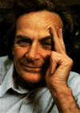

 It is a great adventure to contemplate the universe, beyond man, to contemplate what it would be like without man, as it was in a great part of its long history and as it is in a great majority of places. When this objective view is finally attained, and the mystery and majesty of matter are fully appreciated, to then turn the objective eye back on man viewed as matter, to view life as part of this universal mystery of greatest depth, is to sense an experience which is very rare, and very exciting. It usually ends in laughter and a delight in the futility of trying to understand what this atom in the universe is, this thing - atoms with curiosity - that looks at itself and wonders why it wonders. Well, these scientific views end in awe and mystery, lost at the edge in uncertainty, but they appear to be so deep and so impressive that the theory that it is all arranged as a stage for God to watch man's struggle for good and evil seems inadequate. The Meaning of It All by Richard Feynman